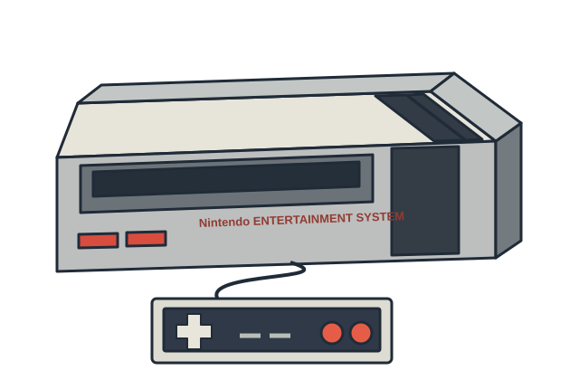
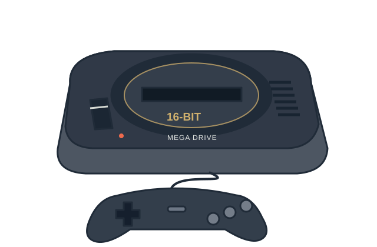

NES / Famicom
Un controller cu două butoane de acțiune și o bibliotecă în care multe idei au devenit clasice.
Deschide profilulDin sufragerie până în buzunar: descoperă dispozitivele din spatele jocurilor, comenzile lor și lucrurile care le-au făcut diferite.
NES, Mega Drive și Game Boy: trei forme diferite ale aceleiași idei. Deschide o fișă pentru hardware, comenzi și jocuri.

Un controller cu două butoane de acțiune și o bibliotecă în care multe idei au devenit clasice.
Deschide profilul
Energie de arcade în sufragerie, un controller comod și un arici care schimbă ritmul.
Deschide profilul
Anul indică prima lansare a fiecărei console în Japonia.
| Consolă | Prima lansare | Familie | Format |
|---|---|---|---|
| NES / Famicom | 1983 | 8 biți | Pentru televizor |
| Mega Drive / Genesis | 1988 | 16 biți | Pentru televizor |
| Game Boy | 1989 | 8 biți · portabilă | Portabilă |
O cronologie selectivă a perioadei în care jocurile au ajuns din sălile arcade în case și în buzunare.
Două palete, o minge și un scor. Jocul arcade al companiei Atari nu a fost primul joc video, dar a devenit un reper timpuriu al succesului comercial. Regulile familiare au făcut noul mediu accesibil.
Lansată inițial ca Atari Video Computer System, consola folosea cartușe interschimbabile. Televizorul din sufragerie putea găzdui mai multe jocuri, iar colecționarea lor devenea parte din experiență.
Nintendo lansează Family Computer în Japonia. Varianta internațională, Nintendo Entertainment System, ajunge în America de Nord în 1985. Personaje precum Mario și Link vor deveni repere ale acestei generații.
Consola Sega apare în Japonia în 1988, apoi în America de Nord sub numele Genesis în 1989. Sonic the Hedgehog, lansat în 1991, îi va oferi un personaj emblematic și o identitate construită în jurul vitezei.
Un ecran monocrom și cartușe mici au dus jocurile dincolo de televizor. Tetris, inclus în pachetul de lansare în mai multe piețe, a fost o potrivire naturală pentru sesiuni scurte și joc oriunde.
Noua consolă Nintendo apare în Japonia în 1990, apoi ca Super Nintendo în America de Nord în 1991 și în Europa în 1992. Super Mario World arată potențialul generației prin hărți ramificate, culori și personaje expresive.
Experiența originală este interesantă, dar nu este singura cale de a descoperi un joc.
| Variantă | Avantaj | Ce să verifici |
|---|---|---|
| Consolă și cartuș original | Hardware și controller din epocă | Starea consolei, regiunea și conectarea la televizor |
| Colecție sau relansare oficială | Acces simplu pe dispozitive actuale | Jocurile incluse, prețul și eventualul abonament |
| Emulator și copie autorizată | Configurare flexibilă și opțiuni de afișare | Compatibilitatea și dreptul de utilizare a fișierelor de joc |
O opțiune oficială este Nintendo Switch Online, care include biblioteci de jocuri clasice. Catalogul și nivelul de abonament necesar diferă; verifică oferta disponibilă pentru regiunea ta.
Nu. O relansare oficială poate fi o variantă mai simplă. Hardware-ul original are sens dacă te interesează experiența din epocă și ai verificat alimentarea, regiunea și conectarea la televizor.
Cartușele, alimentarea și standardele video pot diferi. Verifică modelul exact și manualul înainte să conectezi un dispozitiv vechi; un adaptor fizic nu garantează compatibilitatea electrică.
Începe cu ce ai deja. Pentru platforme, o cruce direcțională precisă poate fi mai comodă. Variantele moderne pot permite remaparea comenzilor.